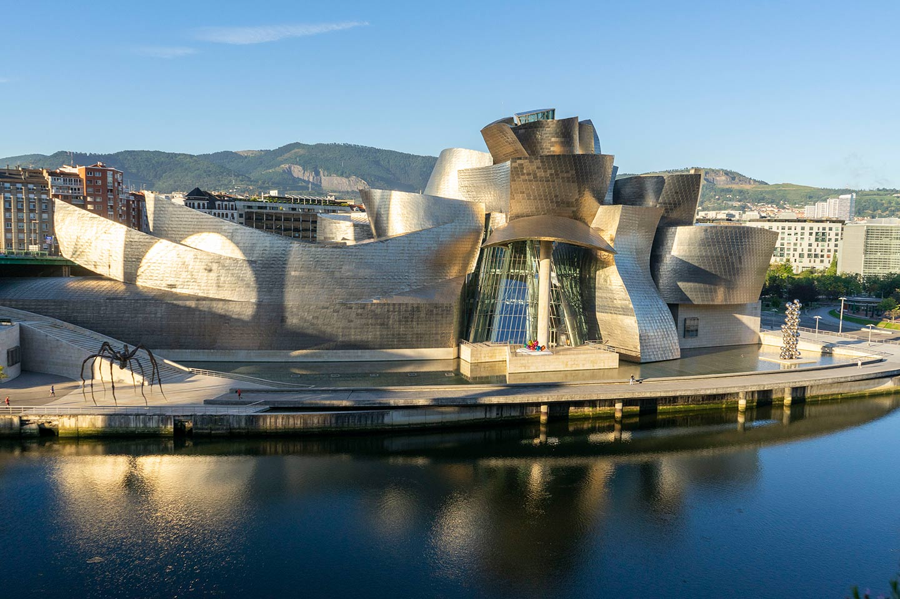

VPD VOYAGES
Bilbao, el Botxo !
Escapade de 4 jours au Pays Basque
Musée Guggenheim Bilbao
- Casco Viejo & pintxos
- San Juan de Gaztelugatxe
- Guernica & l'Arbre de la Liberté
- Astigarraga & l'expérience txotx
vpdvoyages.com